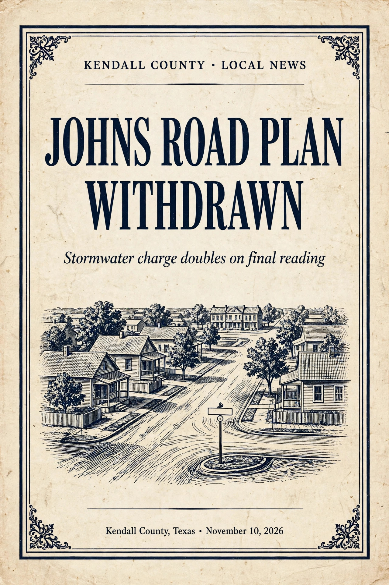

Applicant withdraws Johns Road townhome plan, Boerne council doubles stormwater charge on final reading
Applicant withdraws Johns Road townhome plan, Boerne council doubles stormwater charge on final reading
The applicant for a 29-unit townhome project at 727A Johns Road withdrew the annexation and rezoning requests at the Boerne City Council meeting on November 10, after a public hearing where residents of the Villas at Hampton Place opposed any connection from the project to Hampton Way. The council accepted the withdrawal 5-0 and took no vote on the annexation or the zoning itself. In other action, the council doubled the monthly stormwater charge on final reading, adopted amendments to the Unified Development Code, the city land development rules, including new rules for data centers, and awarded a $2,070,000 contract for the water treatment plant carbon project.
The Johns Road items came first on the regular agenda. Ordinance No. 2026-20 would have annexed about 6.46 acres at 727A Johns Road (KAD No. 14393) into the city. Ordinance No. 2026-21 would have rezoned the same tract from HOL interim holding zoning to R3-D-PUD planned unit development zoning, a flexible zoning category the city uses for a specific project plan. Planning Director Nathan Crane said the project was 29 townhome units, about 4.5 units per acre, with just over an acre of open space, and that the tract holds the Lex Sanitarium, a recorded Texas historical landmark the plan would relocate on the site with state and city landmark approvals. Crane said the Planning and Zoning Commission recommended denial after a September 14 hearing, finding the request did not meet the code criteria for approval. He first stated that commission vote as 5-1 and later corrected it on the record during the meeting.
Access decided the argument. Staff said the project's private drive to Johns Road does not meet the city access requirements and that its traffic study assumed all traffic would use Johns Road. Eric Munoz of 137 Hampton Cove, president of the Villas at Hampton Place homeowners association board, said the plan would create a full public access point through Hampton Way, not an emergency only connection, and asked the council to deny it. Daniel Stevens of 142 Hampton Run West and Erin Graves of 112 Hampton Way also spoke against it during public comment, and Graves, Munoz, Mackenzie Conley of 101 Hampton Cove, and Virginia Garza of 133 Hampton Cove spoke against it again at the hearing. Daniel Wetzel, the applicant's engineer, said the tract is surrounded by the city, matches the future land use map, and is less dense than the Villas at Hampton Place next door. He said primary access would be Hampton Way, a public street, with a recorded 25-foot easement to Johns Road as second access, and that the owner had offered the adjacent commercial owner $1 million to widen that easement and was declined. Architect Frank Valladez, speaking for the buyer, said the Hampton Way connection would be gated for fire and emergency vehicles only. Owner Dennis Spinelli asked the council for a chance to develop the property. After the hearing closed at 7:27 p.m., Wetzel withdrew the annexation and zoning requests before the council took any action, saying the applicant would evaluate the comments and determine a path forward. The council accepted the withdrawal 5-0, with Joseph Macaluso seconding the motion to accept.
The stormwater item finished a process that began October 27. Ordinance No. 2026-19, on second reading, the second of two council readings before an ordinance takes effect, restates the municipal stormwater drainage utility system and raises the monthly charge from $4 to $8 per equivalent resident unit, a unit equal to 4,700 square feet of impervious cover such as roofs and pavement (motion by Ty Wolosin, second by Joe Bateman, 5-0). The charge takes effect January 1. Staff said the utility serves a little over 7,000 customers, about 90 percent residential, and brings in about $670,000 a year at the current rate. The March 2022 drainage master plan identified 16 projects costing a little over $60 million in 2022 dollars. The Adler Road culverts, a $5.7 million project, are substantially complete, and the next project, the Minger Creek Bridge, is estimated at about $15 million with a federal grant decision expected in December or January.
The Unified Development Code amendments, Ordinance No. 2026-22, passed on a one-time reading, a single reading the city charter allows in place of two (motion by Bret Bunker, second by Macaluso, after a public hearing with no speakers). The amendments revise the plat review process, add plat exemptions in defined cases, create a formal administrative site plan review, and codify foundation permits and temporary certificates of occupancy. They also set rules for data centers before any applicant has asked about one, in staff's words: a data center would be allowed only in the industrial districts and only with a special use permit, an extra approval the city requires for certain uses, with studies of water and electrical use, traffic, and noise. The Planning and Zoning Commission recommended a buffer of 1,000 feet between a data center and residential uses, up from 500 feet in the first draft. Council members questioned whether 1,000 feet is enough and noted that most industrial land in Boerne sits next to residential areas. The amendments also allow vape shops, CBD dispensaries, and tattoo studios in the C3 and C4 districts with a special use permit, allow permanent cosmetics in the office and commercial districts, require rainwater and air conditioning condensation capture for new nonresidential projects, and update the dark sky lighting rules tied to the city's pending International Dark Sky Community certification application.
The consent agenda, the batch of routine items the council can approve in a single vote, passed 5-0 (motion by Macaluso, second by Bunker). It completed second reading of Ordinance No. 2026-18, cutting the speed limit on a portion of Upper Balcones Road, with a penalty of up to $200 per violation. It also approved the minutes of October 27 and of the October 29 special called meeting, a lease with Dell Financial Services not to exceed $204,771.50 (Resolution No. 2026-R60), a lease with AT&T Capital Services, Inc. for iPads not to exceed $81,823.32 (Resolution No. 2026-R61), an interlocal agreement with Kendall County for fire services (Resolution No. 2026-R62), and an amended interlocal agreement with Kendall County for library system services (Resolution No. 2026-R63).
In resolutions, the council approved an enterprise asset management software agreement through the Vertosoft cooperative purchasing program, with first year spending not to exceed $297,170.77 and pricing set for five years (Resolution No. 2026-R64; motion by Macaluso, second by Bunker, 5-0). Staff put the five-year cost at $1,250,215.20. The council awarded the contract for the water treatment plant granular activated carbon addition project to REC Industries Incorporated, not to exceed $2,070,000 (Resolution No. 2026-R65; motion by Wolosin). Staff said seven bids opened October 15 ranged from $1.97 million to about $2.59 million, the carbon addition is a final filtration step aimed at disinfection byproducts and at geosmin, the compound behind taste and odor episodes, and a Texas Water Development Board grant that could cover the full project cost is expected to be decided by January. The council set the city's 2027 water commitment from the Guadalupe-Blanco River Authority at 2,205 acre feet, up 40 acre feet from 2026 (Resolution No. 2026-R66; motion by Wolosin, second by Bunker, 5-0), and set the 2027 quarterly groundwater allocation under its Cow Creek Groundwater Conservation District permit at 15, 35, 35, and 15 percent (Resolution No. 2026-R67; motion by Bunker).
Five shared services agreements, the city's funding agreements with local nonprofits, passed in five separate 5-0 votes: Rainbow Senior Center, $100,000 (Resolution No. 2026-R68); Friends of the Cibolo Wilderness (Cibolo Center for Conservation), $15,000 (Resolution No. 2026-R69); Boerne Hill Country Family Services, $45,000 (Resolution No. 2026-R70); Das GreenHaus, $60,000 (Resolution No. 2026-R71); and Hill Country Court Appointed Special Advocates (Hill Country CASA), $5,000 (Resolution No. 2026-R72). The total is $225,000. Staff said the rewritten agreements move all five groups to a one-time payment and annual reporting.
The council also recognized the 2026 Citizens Fire Academy graduates, 11 graduates of a program the fire department has run since 2019, heard a Dickens on Main update in the city manager's report, and heard a subcommittee update pointing toward a citywide wayfinding signage plan. Staff said last year's Dickens on Main drew over 51,000 visitors, and this year's event runs the Friday and Saturday after Thanksgiving. The council met in executive session twice, at 6:06 p.m. on the Johns Road property and at 8:56 p.m. on the city manager's evaluation and the Johns Road property, and adjourned at 9:20 p.m. The next regular meeting is Tuesday, November 24, at 6:00 p.m.
Sources
Swagit video and transcript, Boerne City Council regular meeting, November 10, 2026: https://boernetx.new.swagit.com/videos/408373. Boerne City Council agenda, regular meeting, November 10, 2026 (Legistar): https://boerne.legistar1.com/boerne/meetings/2026/11/2084_A_City_Council_26-11-10_Agenda.pdf. Official minutes for the November 10 meeting were not posted on Legistar at the time of writing, so vote tallies are per the transcript and the mayor's announced results. Where a transcript announcement did not state a numeric tally, no tally is given in this article.